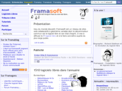
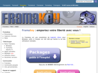
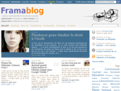
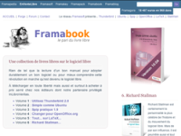
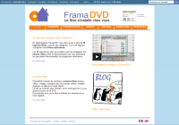
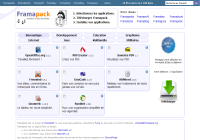
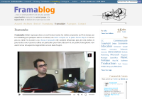

-
Framasoft
Framasoft est un réseau de sites web collaboratifs dont l'objectif est de faire découvrir le logiciel libre et sa culture au plus large public.
Fort d'une communauté de plusieurs dizaines de milliers de visiteurs par jour, Framasoft propose différents projets de promotion du libre, d'information et d'entraide.
Vous pouvez découvrir le réseau par projets ou consulter la très complète page Wikipédia relative à Framasoft:
-
Projets Framasoft
Il est parfois difficile de s'y retrouver parmi les mutiples projets et sites web du réseau Framasoft, c'est pourquoi nous vous proposons de les découvrir un par un :
- Framasoft, les pages jaunes du logiciel libre
- Framakey, logiciels sur clés USB
- Framablog, le Courrier International du libre
- Framabook, collection de livres libres
- FramaDVD, compilation de logiciels libres
- Framapack, (ré)installer simplement vos logiciels
- Framatube, zapping du libre
-
Framasoft
Framasoft est un réseau de sites web collaboratifs dont l'objectif est de faire découvrir le logiciel libre et sa culture au plus large public.
Fort d'une communauté de plusieurs dizaines de milliers de visiteurs par jour, Framasoft propose différents projets de promotion du libre, d'information et d'entraide.
Vous pouvez découvrir le réseau par :
- mots-clés : logiciels, actions / rencontres, éducation, partenariats, veille / relais / média
- projets : Framasoft, Framakey, Framalang, Framablog, Framabook, FramaDVD, Framapack, Framatube
- la très complète page Wikipédia relative à Framasoft
-
Framakey
Premier projet à proposer une compilation organisée d'applications portables libres et francisées, la Framakey a servi de socle pour des initiatives telles que « Clé en main » du CRDP de Paris et l'opération « 173 000 clés pour les lycées » réalisée par le Conseil Régional d'Île-de-France.
De la Framakey initiale sont nés d'autres projets comme les packs Framakey, la Framakey Ubuntu-fr Remix et le dépôt d'applications portables.
à ce jour, la Framakey a été distribuée à plusieurs millions d'exemplaires.
-
Framablog
Lieu d'information, de réflexion et de débat, le Framablog traite de l'actualité du logiciel libre et du réseau Framasoft. On y observe également les avancées de la « culture libre » et les apports de l'Internet dans la société d'aujourd'hui.
Le Framablog exerce une veille de l'actualité de Libre et, grâce à son équipe de traducteurs Framalang, permet aux lecteurs francophones d'accéder aux articles les plus pertinents issus de la presse et des blogs internationaux.
Le Framablog met l'accent sur les thèmes de l'éducation, du rôle que joue la philosophie du Libre dans la société, des libertés numériques. On y trouve aussi son lot de trolls et du sujets décalés...
-
Framabook
Framabook est une collection de livres libres conçus à plusieurs mains et placés sous licence libre. Lisibles en-ligne sur le site Framabook.org ils sont édités au format papier et distribués dans les boutique en-ligne EnVenteLibre.org et InLibroVeritas.net.
La collection Framabook comporte des manuels permettant la découverte de logiciels libres tels que Thunderbird, OpenOffice.org ou GNU/Linux Ubuntu. Elle comporte également des ouvrages présentant le mouvement du logiciel et sa culture à l'image de la biographie de Richard Stallman, père du logiciel libre, ou de la bande dessinée humoristique, les Geekscottes, de Nojhan. Enfin, la collection Framabook recouvre également des ouvrages plus techniques traitant directement de programmation (LaTeX et bientôt C) de manière à regrouper en un ensemble cohérent la bibliothèque numérique des Hackers de demain.
Il est à noter, pour finir, que les auteurs reversent un pourcentage de leurs droits aux équipes qui maintiennent les logiciels faisant l'objet d'un livre.
-
FramaDVD
Le FramaDVD est une collection de logiciels libres fournis avec leurs fiches explicatives. Les vingt logiciels les plus utilisés sont même accompagnés d'une vidéo de démonstration.
Ces logiciels sont répartis en quatre catégories : les indispensables, les logiciels avancés, les jeux, et les logiciels destinés à l'éducation.
Le FramaDVD contient aussi des images, des vidéos, des textes et des musiques protégés par des licences libres, vous encourageant à les partager (même hors du « cercle familial ») et à les réutiliser gratuitement et légalement.
-
Framapack
Framapack est un utilitaire conçu pour vous aider à installer sans effort un peu de liberté dans votre ordinateur. Que vous cherchiez des applications destinées à la bureautique, au graphisme, au multimédia ou encore à l'éducation : rendez-vous sur la page Framapack. Faites votre choix parmi une sélection riche de logiciels libres, et Framapack les regroupe et vous les envoi pour une installation facile en un clic.
-
framatube
Le projet Framatube compile plus d'une centaine de vidéos faisant partie intégrante de la culture du logiciel libre. Ces vidéos sont disponibles en français ou sous-titrée par l'équipe de traduction Framalang.
On y trouve des conférences, des documentaires, des extraits télévisés, des citations politiques, des éléments d'information sur la culture et la musique libre ou des reportages internes au réseau.
Le service est hébergé par la plate-forme blip.tv qui permet, en plus des moyens habituels et propriétaires de diffusion de vidéo en-ligne de télécharger en toute simplicité et en toute légalité la version en format libre Ogg Theora de chaque vidéo. Il enfin également possible de visualiser les vidéos grâce au standard ouvert HTML5 et sa balise « video ». <<